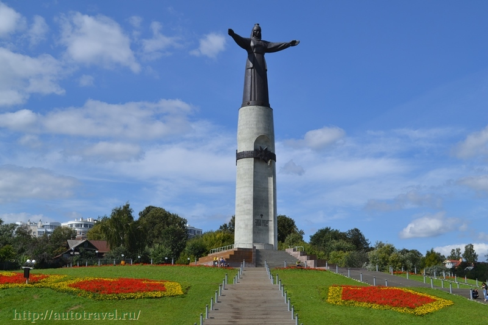

Историческая часть города сосредоточена в месте впадения реки Чебоксарки в Волгу – возле искусственно расширенного Чебоксарского залива. Переход через него освещается гирляндами, образующими самый длинный в России, 320-метровый световой туннель.
Чебоксарский залив — интереснейшая часть города. По сути, это средоточие большинства достопримечательностей Чебоксар. Заметим, что туристам стоит обратить внимание не только на памятники архитектуры и культуры, расположенные здесь, но и на историю создания Чебоксарского залива.

Монумент «Мать-Покровительница» считается одной из главных достопримечательностей не только Чебоксар, но и всей Чувашии. Эта скульптура посвящена всем матерям, оберегающим своих детей. Скульптура Матери-Покровительницы выглядит таким образом, что кажется, будто она обнимает весь город.
Сквер Чапаева уникален по двум причинам. Во-первых, он один единственный во всей России. Во-вторых, расположен прямо на месте родной деревни Чапаева — Будайки. До появления сквера Чапаева здесь находились поля, через которые проходил тракт Канаш-Чебоксары.